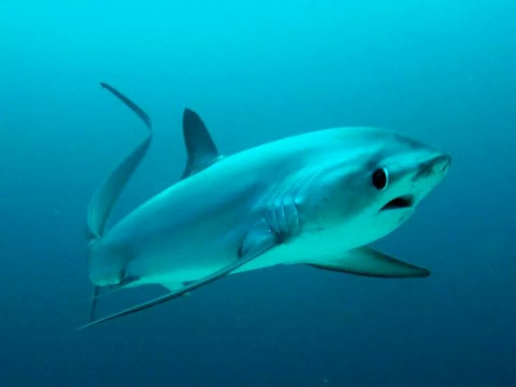
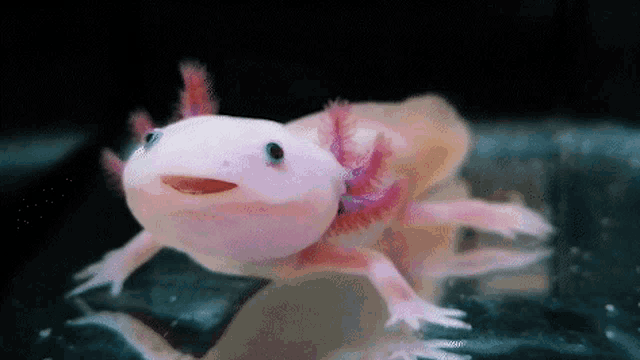
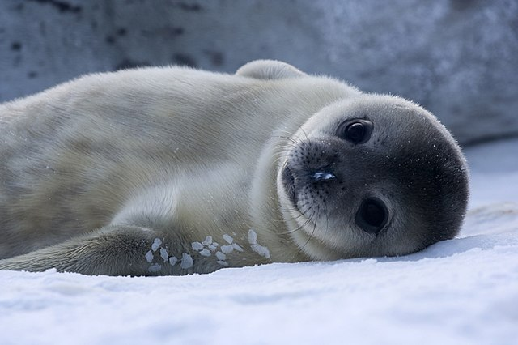

Tubarão Zorro
ele é kawai :3

O zorro-olho-grande é uma espécie de peixe cartilaginoso que se caracteriza por sua enorme cauda. É um organismo de ampla distribuição, com incrível mobilidade e atividade, o que lhe permite se deslocar entre a superfície e as águas profundas com bastante rapidez. A reprodução destes espécimes é o seu maior obstáculo, e ele é considerado um tubarão altamente vulnerável.
Leia mais..
Coelho do Mar
ele é venenoso :3

Conhecido como coelho do mar, Jorunna parva é um molusco, uma lesma do mar que vive nas profundezas do oceano indico e pacífico. O que lembram as orelhinhas de coelho são órgãos sensoriais e se chamam rinóforos, são responsáveis pela detecção de substâncias, auxiliando a lesma na busca por comida e parceiros.
Todo esse ecossistema está ameaçado, é preciso unir forças, dar voz aos indígenas, aos povos tradicionais da floresta! Defender a Amazônia é defender a vida!
Leia mais..
Axolote
ele é um réptel :3

Os axolotes podem atingir 30 centímetros de comprimento e pesar entre 125 e 180 gramas. Uma das principais características dos axolotes que despertam tanta fascinação é a presença de brânquias, normalmente de coloração avermelhada, que se dispõem ao redor da cabeça do indivíduo adulto, característica essa que normalmente está presente apenas nos estágios larvais de outras espécies.Outra característica interessante dos axolotes é a presença de uma cauda, característica também comum às larvas, mas que se mantém no indivíduo adulto.
Leia mais..
Foca
ela é fofa :3

As focas são mamíferos aquáticos que se caracterizam por terem corpo fusiforme arredondado e um pescoço curto e volumoso. Elas possuem corpo recoberto por pelo, o qual é trocado anualmente. As focas não possuem orelhas externas. Além disso, os machos não possuem testículos externos, sendo esses órgãos intra-abdominais.
Para se deslocarem no ambiente aquático, as focas utilizam suas nadadeiras posteriores, as quais não podem ser projetadas para frente. Elas servem como forma de direcionar o nado. As focas são excelentes mergulhadores e podem atingir grandes profundidades e permanecer longos períodos embaixo d’água. As focas-comuns podem mergulhar a profundidades de 427 metros e permanecer até 30 minutos embaixo d’água.
No ambiente terrestre, são pouco ágeis, deslocando-se por meio do arqueamento de seu corpo. Diferentemente de outros pinípedes, as focas não utilizam as nadadeiras anteriores como apoio, uma vez que são bastante curtas. As nadadeiras anteriores das focas são cobertas por pelos e possuem cinco dedos com unhas afiadas.
As focas já foram muito caçadas em todo o mundo devido ao alto valor comercial de sua gordura e pele. Muitas populações foram eliminadas, sendo a caça uma das causas que levaram à extinção da foca-do-caribe. A caça desses animais, atualmente, é proibida.
Leia mais..